In meiner Tokio-Geschichte steht der Satz, dass man an irgendeiner Station aussteigt und die Stadt den Rest erledigt. Das stimmt. Trotzdem gibt es Bahnhöfe, an denen der Rest besonders schnell erledigt ist. Hier sind acht davon. An allen war ich selbst.
Die Gehzeiten stammen von den Betreibern der Orte selbst oder vom offiziellen Tokio-Reiseführer GO TOKYO. Sie gelten bis zum Eingang. Wer im Meiji-jingū bis zum Hauptschrein will, läuft ab dem Tor noch mindestens zehn Minuten weiter.
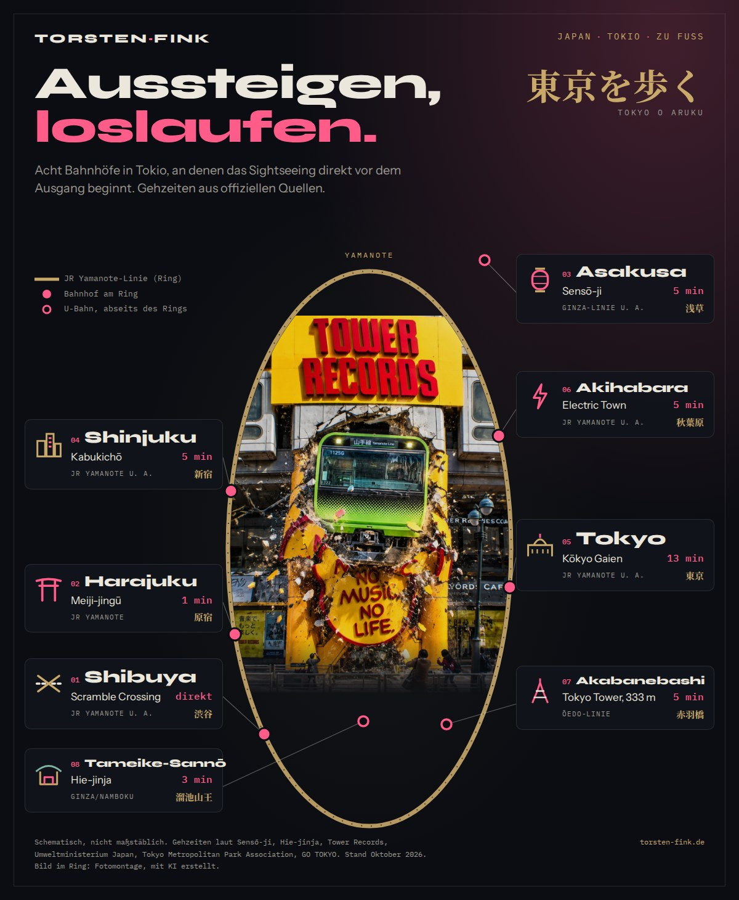
Die acht Bahnhöfe auf einen Blick
| Bahnhof | Ziel | Gehzeit | Linie |
|---|---|---|---|
| Shibuya | Scramble Crossing, Hachikō | direkt | JR Yamanote u. a. |
| Harajuku | Meiji-jingū, Eingang | ca. 1 min | JR Yamanote |
| Asakusa | Sensō-ji | ca. 5 min | Ginza-Linie u. a. |
| Shinjuku | Godzilla-Kopf, Kabukichō | ca. 5 min | JR Yamanote u. a. |
| Tokyo | Kōkyo Gaien | ca. 13 min | JR Yamanote u. a. |
| Akihabara | Electric Town | ca. 5 min | JR Yamanote u. a. |
| Akabanebashi | Tokyo Tower | ca. 5 min | Ōedo-Linie |
| Tameike-Sannō | Hie-jinja | ca. 3 min | Ginza- und Namboku-Linie |
01Shibuya 渋谷
- Scramble Crossing und Hachikō-Statuedirekt am Bahnhof
- Tower Records Shibuya, ab Hachikō-Ausgangca. 5 min
Hachikō war ein Akita-Hund, der in den 1920er-Jahren täglich am Bahnhof auf sein Herrchen wartete. Die Statue ist heute der Treffpunkt der Stadt. Ein paar Minuten weiter steht Tower Records. Die heutige Filiale hat im März 1995 eröffnet.
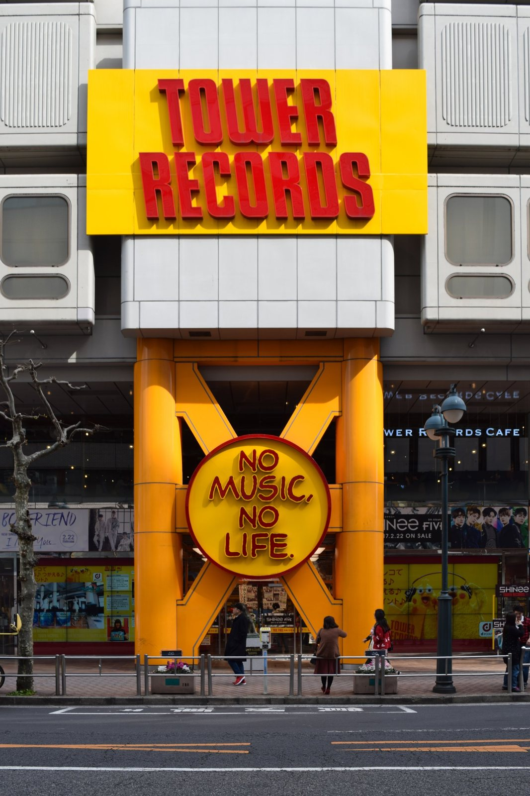
„No Music No Life“ war ein Teil meiner Lebenseinstellung, lange bevor ich wusste, dass es auch der Slogan des Ladens ist. Ich saß oben im Café und habe Leute beobachtet. Einige sahen aus, als würden sie hier wohnen.
02Harajuku 原宿
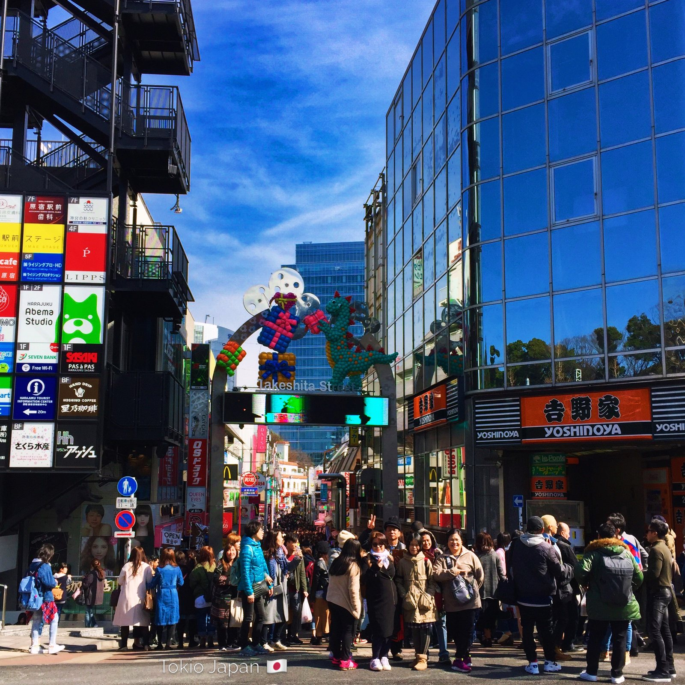
- Takeshita-dōri, 350 m langgegenüber
- Meiji-jingū, Eingangca. 1 min
- Yoyogi-Parkca. 3 min
Auf der einen Straßenseite Crêpes und Kawaii-Mode, auf der anderen ein Wald. Der Meiji-jingū und der Yoyogi-Park liegen direkt nebeneinander.
Im Meiji-jingū kam mir ein Hochzeitspaar entgegen. Sie in weißer Seide mit Wataboshi-Haube, er im schwarzen Montsuki. Hundert Handys, trotzdem absolute Stille.
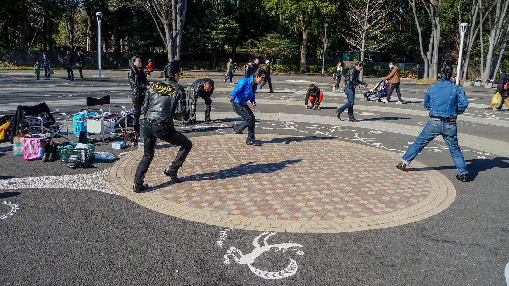
03Asakusa 浅草
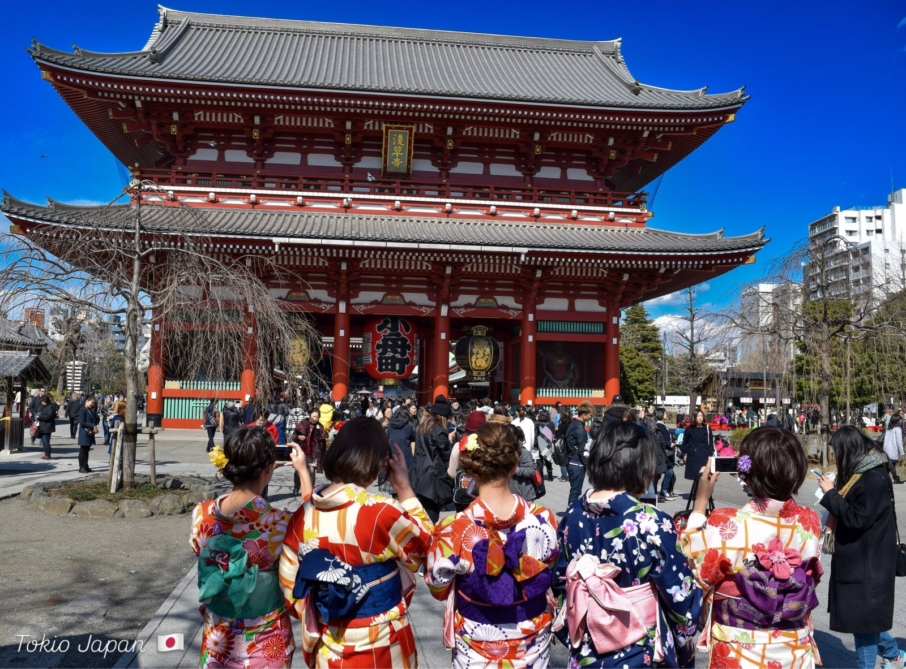
- Sensō-ji, von allen Asakusa-Bahnhöfenca. 5 min
- Laterne am Kaminarimonca. 3,9 m
- Laterne am Hōzōmon3,75 m
Zwei Tore, zwei Riesenlaternen. Die am äußeren Kaminarimon trägt die Zeichen für „Donnertor“. Die am Hōzōmon trägt den Namen des Stadtteils Kobunachō, dessen Bewohner sie gestiftet haben. Wer beide fotografiert, hat die Verwechslung schon hinter sich.
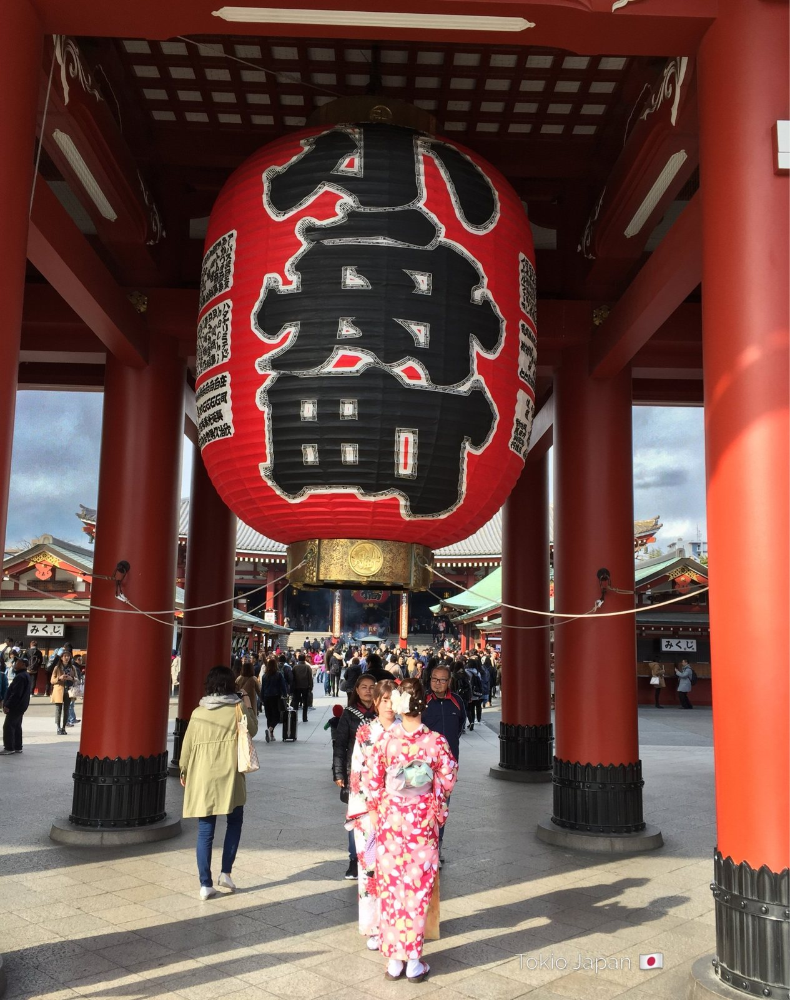
Frauen im Kimono laufen zwischen Selfie-Stöcken hindurch, als wäre das schon immer so gewesen. Die Handys sind neu. Der Tempel nicht.
04Shinjuku 新宿
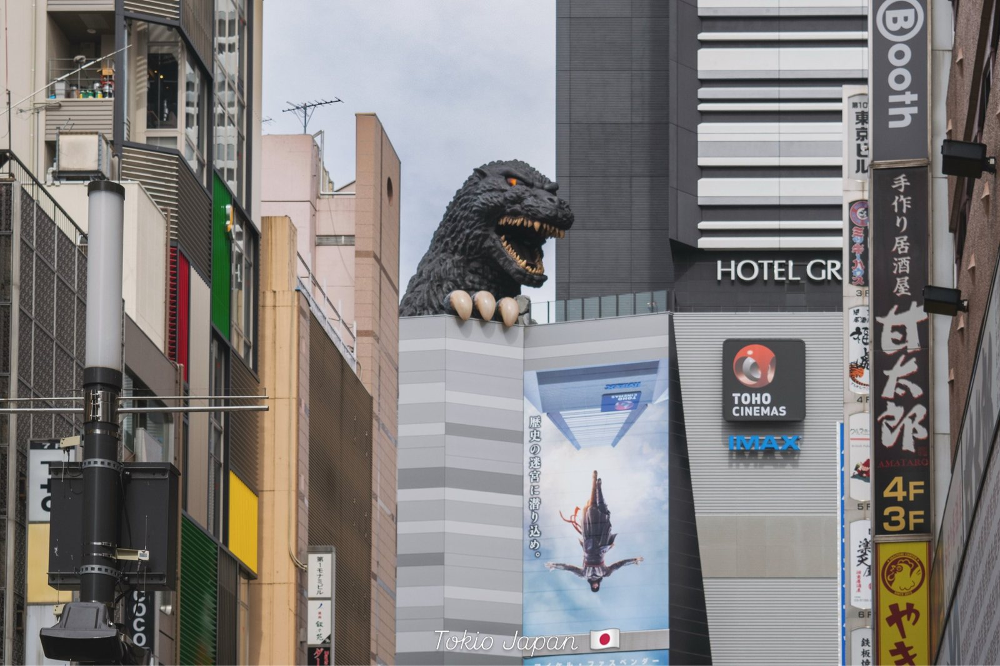
- Godzilla-Kopf, ab JR Shinjukuca. 5 min
- ab Seibu-Shinjukuca. 3 min
Der Kopf sitzt auf der Terrasse im 8. Stock des Shinjuku Toho Building, das 2015 eröffnet hat. Darunter beginnt Kabukichō.
Ich trat aus der Shinjuku Station und war überwältigt. Neonlicht, J-Pop, eine Wand aus Menschen. Niemand rempelte mich an.
05Tokyo 東京
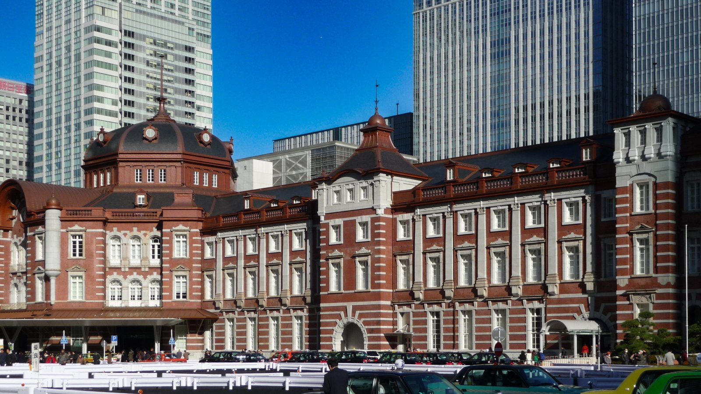
- Bahnhofsgebäude Marunouchidirekt
- Kōkyo Gaien, ab JRca. 13 min
- Kōkyo Gaien, ab Marunouchi-Linieca. 10 min
Das Backsteingebäude hat Tatsuno Kingo entworfen, eröffnet wurde es 1914. Die Restaurierung war im Oktober 2012 abgeschlossen. Zum Platz vor dem Kaiserpalast ist es ein kurzer Spaziergang.
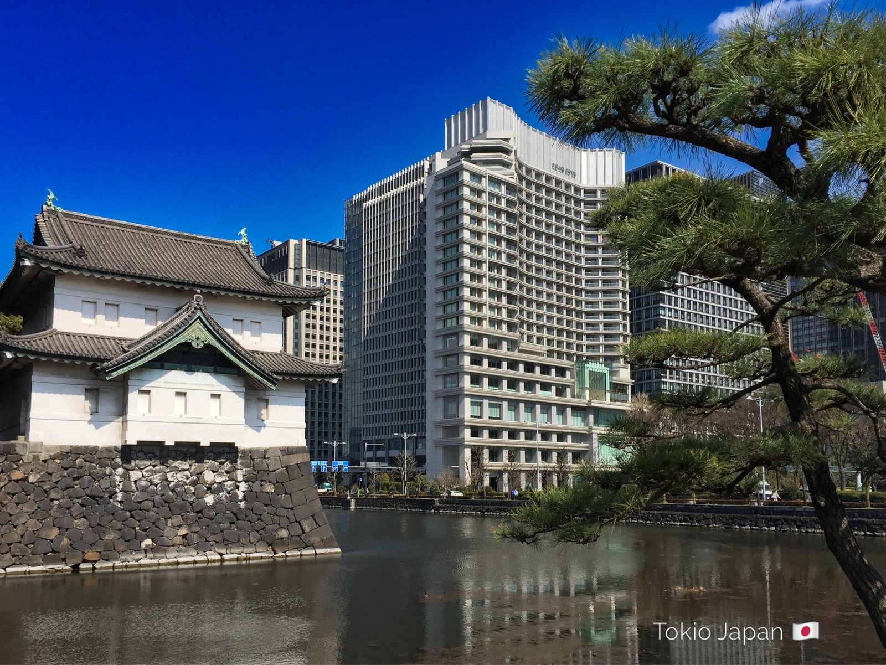
Für den Palastbesuch samt Palastgarten brauchte ich 2009 eine schriftliche Erlaubnis, beantragt von Deutschland aus. Heute geht die Anmeldung online in wenigen Minuten.
06Akihabara 秋葉原
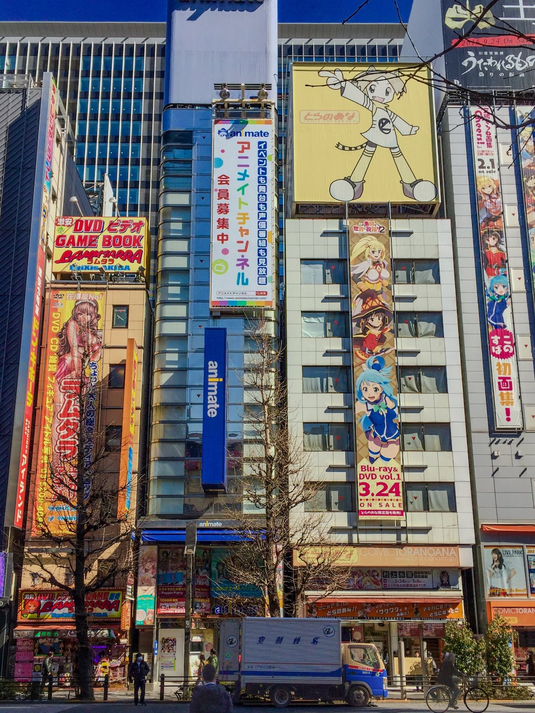
- Electric Town, ab Ausgang Electric Townca. 5 min
- Sonntags autofrei, April bis September13–18 Uhr
- Sonntags autofrei, Oktober bis März13–17 Uhr
Bei Regen oder starkem Wind kann die autofreie Zeit ausfallen.
Vor einem großen Werbebanner stand ein Mann und schaute so versunken auf das Anime, als hätte die Welt um ihn herum aufgehört zu existieren. Ich habe direkt neben ihm fotografiert, bemerkt hat er mich nicht.
07Akabanebashi 赤羽橋
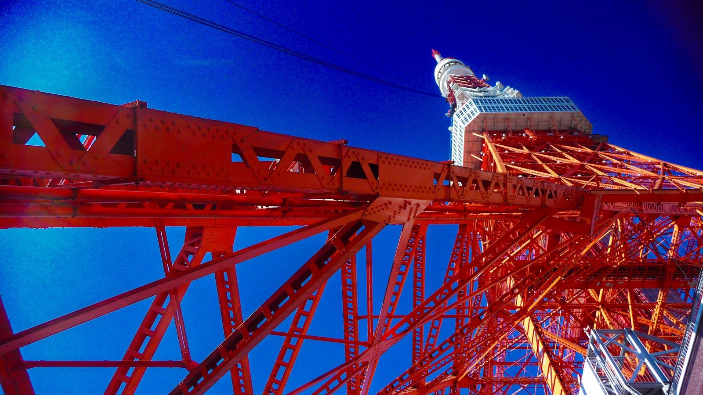
- Tokyo Tower, ab Ausgang Akabanebashica. 5 min
333 Meter hoch, gebaut 1958. Der Bahnhof liegt an der Ōedo-Linie, abseits des Yamanote-Rings.
Zu Füßen des Turms verbeugte sich der Gastgeber am Eingang des Tofuya Ukai. Tief und lange, ohne ein Wort. 333 Meter Stahl, ein Meter Verbeugung.
08Tameike-Sannō 溜池山王
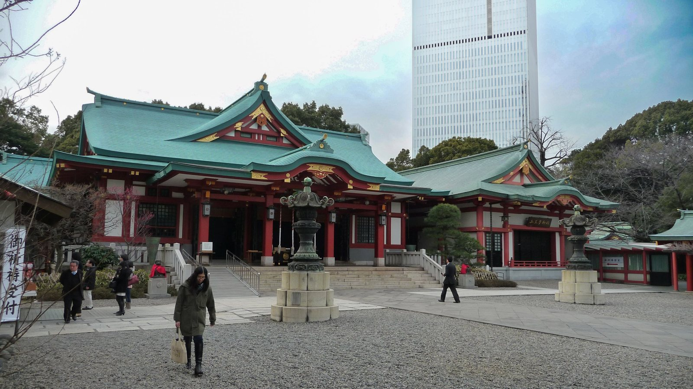
- Hie-jinja, ab Tameike-Sannō Ausgang 7ca. 3 min
- Hie-jinja, ab Akasaka Ausgang 2ca. 3 min
Grüne Dächer über rotem Lack. Dahinter ragt ein Büroturm auf. Im Juni feiert der Schrein das Sannō-Matsuri, eines der drei größten Feste Japans.
Abstecher ans Wasser: Takeshiba
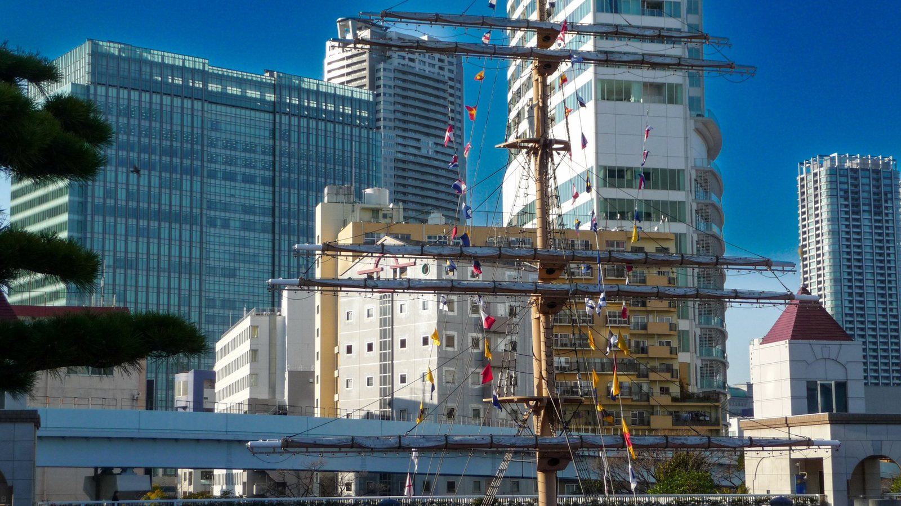
Vom Takeshiba-Terminal legen die Fähren zu den Izu-Inseln und nach Ogasawara ab. Der Bahnhof Takeshiba an der Yurikamome liegt eine Minute entfernt.
Mehr Tokio mit Geschichten statt Gehzeiten: Tokio: Der Puls einer Welt, die niemals schläft. Weiter südlich am Meer: Kamakura.
Quellen & Recherche
Gehzeiten und Fakten habe ich bei den Betreibern der Orte und beim offiziellen Tokio-Reiseführer nachgeschlagen, Stand Oktober 2026. Die Fotos sind von mir. Das Bild im Ring der Karte ist eine Fotomontage, mit KI erstellt.
- Anfahrt Sensō-ji, offizielle Tempelseite
- Anfahrt Hie-jinja, offizielle Schreinseite
- Anfahrt Meiji-jingū, offizielle Schreinseite
- Tower Records Shibuya, Betreiber
- Anfahrt Kōkyo Gaien, Umweltministerium Japan
- Anfahrt Yoyogi-Park, Tokyo Metropolitan Park Association
- Meiji-jingū, GO TOKYO
- Takeshita-dōri, GO TOKYO
- Hachikō-Statue, GO TOKYO
- Kaminarimon, GO TOKYO
- Hōzōmon und Kobunachō-Laterne, Wikipedia
- Godzilla Head, GO TOKYO
- Bahnhof Tokyo, Wikipedia
- Akihabara Electric Town, GO TOKYO
- Tokyo Tower, GO TOKYO
- Hie Jinja, GO TOKYO
- Takeshiba-Pier, tabi-mag
- Tower Records Shibuya, Eröffnung 1995, Kyodo News PR Wire